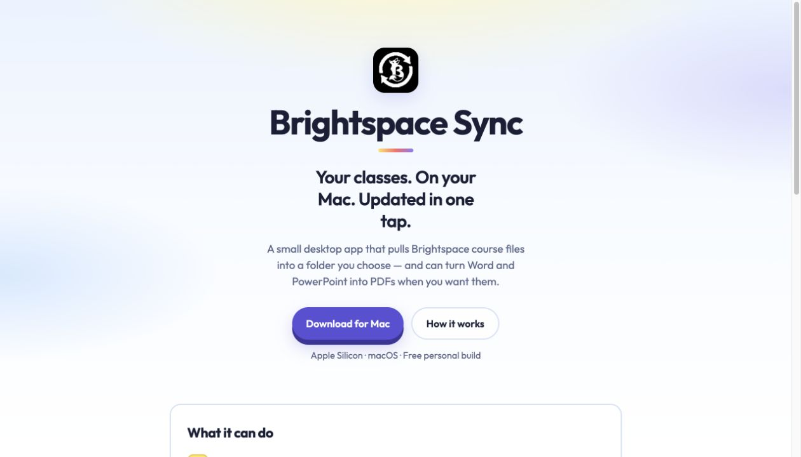
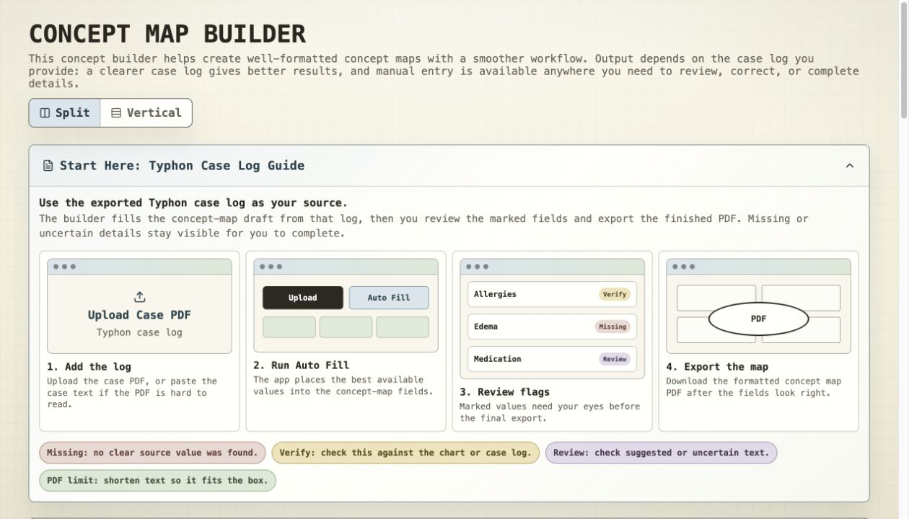
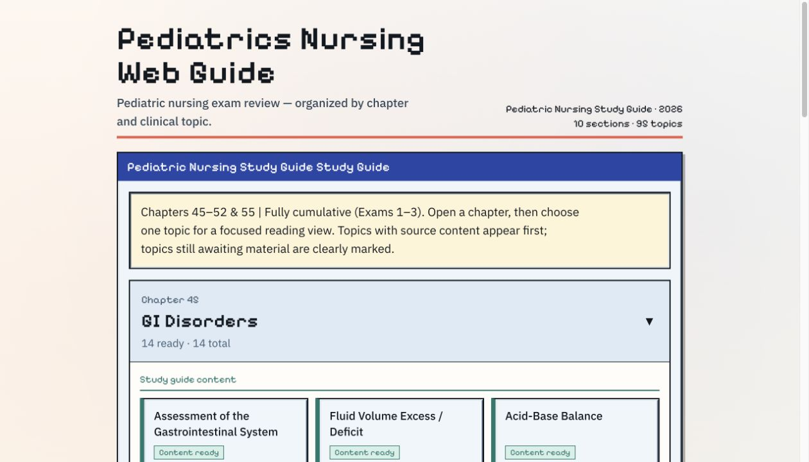

Course files
Mac appBrightspace Sync
Interface previewMac app

Problem
Course files are scattered across folders and formats.
Tool
Syncs current files locally and creates missing PDFs.
01 Nursing workflow portfolio
Six tools for files, forms, clinical input, and study focus.
02 / Tools
Open a live tool or its source.

Course files are scattered across folders and formats.
Syncs current files locally and creates missing PDFs.

Concept-map formatting delays the written work.
Moves a Typhon case log into an editable draft and flags missing fields.

ATI headings must be copied into three worksheets.
Formats the headings; the student writes every critical point.
Routine selections repeat across long Typhon forms.
Reuses saved selections to speed entry. It never generates clinical information.

A long pediatric review outline is hard to scan.
Organizes it into 10 sections and 95 topics for direct review.
ATI pages can time out while you read or take notes.
Keeps the session awake for a set time and shows study tips.
03 / Demo
Facts are grouped. Judgment stays with the student.
Ready to organize.
—